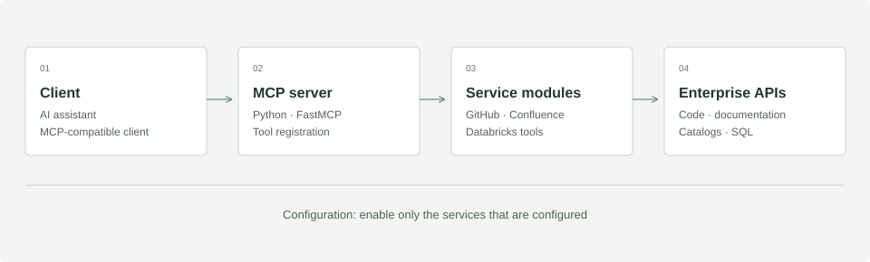

AI connected to engineering context.
A public MCP implementation connecting source code, documentation, and Databricks metadata.
 Python
Python Databricks
Databricks- FastMCP
The problem
Engineering context is distributed across repositories, documentation, and data catalogs. AI assistants need a consistent interface to those systems to support useful engineering workflows.
The implementation
The public MCP repository contains a Python FastMCP server and separate GitHub, Confluence, and Databricks tool modules. Its documentation describes configurable service activation, a command-line interface, and an interactive assistant.
This is public implementation evidence alongside my resume’s enterprise work on MCP integrations, root cause analysis agents, and RAG assistants.
Architecture

Engineering decisions
- Modular integrations
- Service-specific modules separate repository operations, document retrieval, and Databricks access. Review the modules directly in the source links below.
- Configuration at the boundary
- The documented setup activates configured services. This makes individual integrations usable without configuring the entire ecosystem.
- Read and write capabilities
- The documented tools include repository management and SQL execution. A production deployment should explicitly scope credentials and approval boundaries to its intended operations.
- Measure before making scale claims
- The public repository demonstrates integration design. It does not establish enterprise throughput or latency; no such benchmarks are claimed here.
A model for tool execution traces
Illustrative data model · designed for this portfolio, not an internal schema.
tool_definition
PK tool_nameservice_nameinput_schema_version
tool_call
PK call_idFK tool_namestarted_at · statusduration_ms
result_reference
PK result_idFK call_idsource_uriretrieved_at
An illustrative observability extension: a tool definition has many calls, and a call can return multiple source references. This trace store is a proposed design, not a feature claimed for the public repository.
Inspect the work
Use the source to inspect the integration boundaries, tool registration, and configuration approach.
Let’s build what’s next.
Lead data engineering, forward-deployed engineering,
and software engineering for data and AI platforms.